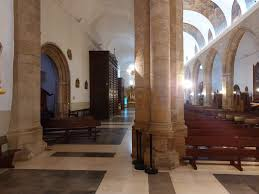

¿Dónde celebraremos nuestra unión?
 |
 |
 |
La iglesia de Corral de Almaguer es un edificio historico que desde el 29 de diciembre de 1981, se considera un monumento histórico-artístico
Se cree que puede datarse de un edificio del siglo XI, construida por la Orden de Santiago
Es conocida tambien por los Corraleños, como la Iglesia de Nuestra Señora de la Asunción
¿Dónde será el banquete?
 |
 |
 |
El Complejo enoturístico Finca la Estacada tiene su origen en una antigua finca de labor
Increibles vistas, con un espacio luminoso y amplio para disfrutar de los diferentes viñedos
Un restaurante muy amplio donde podrás disfrutar del mejor día de tu vida